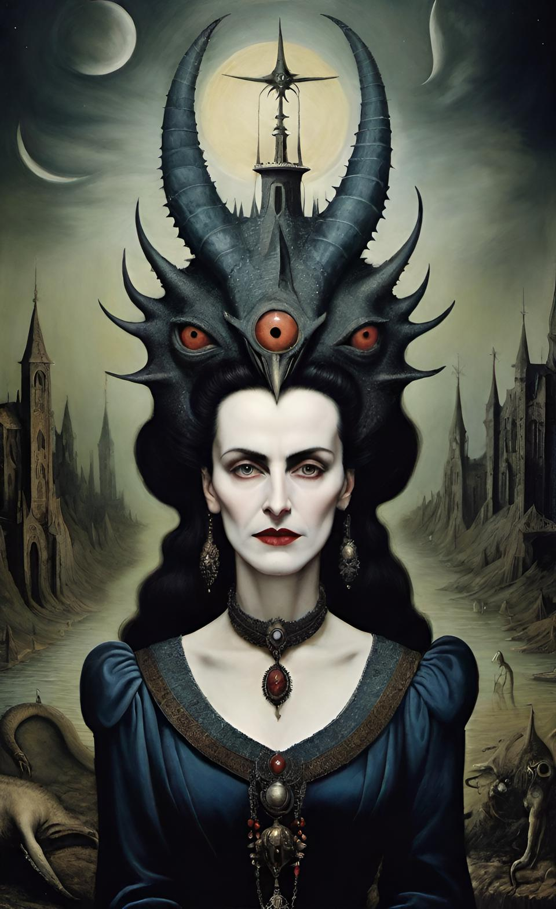
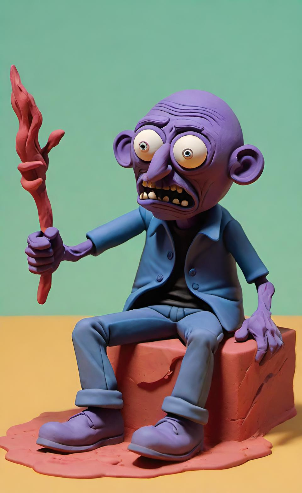
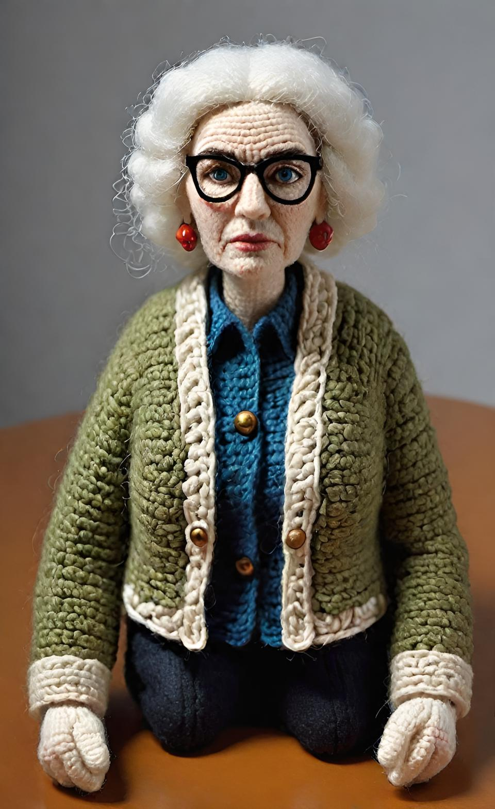
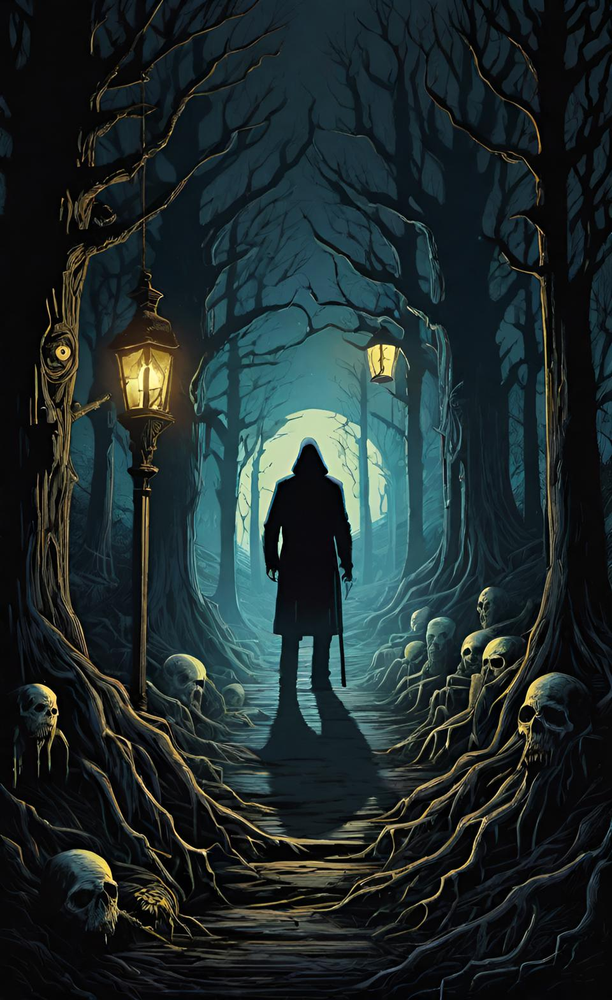

Unsere Ehrengäste

Dr. Anna Schwarz
Experte für Horror-Literatur und Autorin von Bestsellern über die Geschichte des Horrorgenres.

Markus Meyer
Bekannter Horrorfilm-Regisseur, bekannt für seine innovativen Ansätze und seinen einzigartigen Stil.

Julia Roth
Psychologin und Autorin, die sich auf die Psychologie des Schreckens spezialisiert hat.
Oliver König
Produzent und Drehbuchautor, der an zahlreichen erfolgreichen Horrorfilmen mitgewirkt hat.

Sabine Wagner
Künstlerin und Illustratorin, die für ihre eindringlichen Horrorkunstwerke bekannt ist.